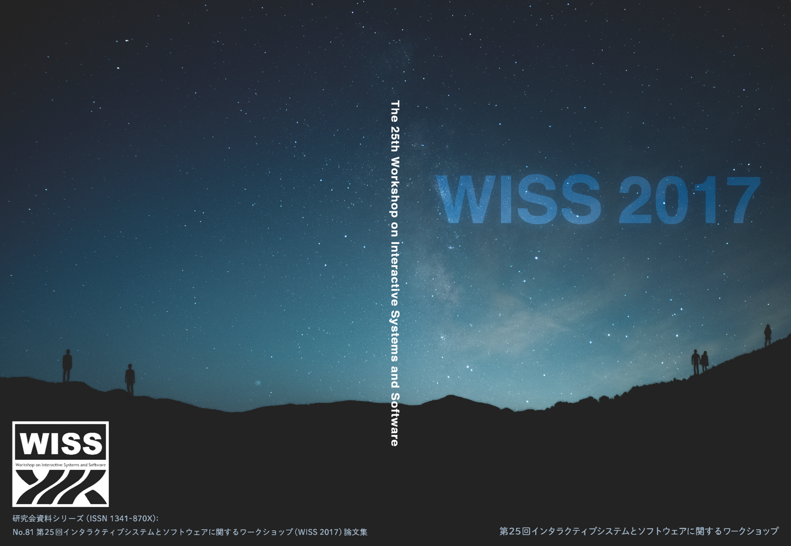

表彰
最優秀論文賞
- Ohmic-Touch: 静電容量方式タッチサーフェス上におけるオブジェクトを介したインタラクション手法
登壇発表賞
- Ohmic-Touch: 静電容量方式タッチサーフェス上におけるオブジェクトを介したインタラクション手法
対話発表賞（参加者の投票による対話発表賞）
- ブリッジ構造と樹脂の引き伸ばしを用いた高密度な毛構造の造形手法
対話発表賞（プログラム委員の投票による対話発表賞）
- 実世界人形遊びを拡張する仮想ドールハウス
- 尾崎 保乃花，的場 やすし，椎尾 一郎（お茶の水女子大）
- エッジ情報の多いコンテンツに対する自然な視線誘導の提案
表紙デザイン賞
